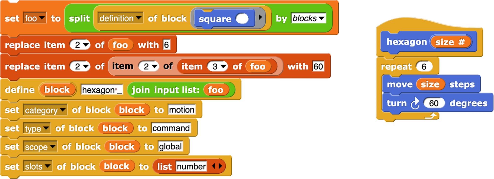
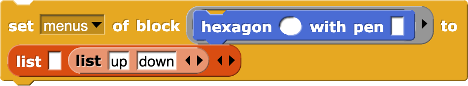
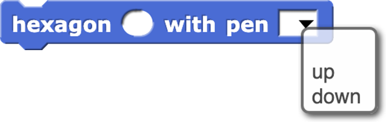
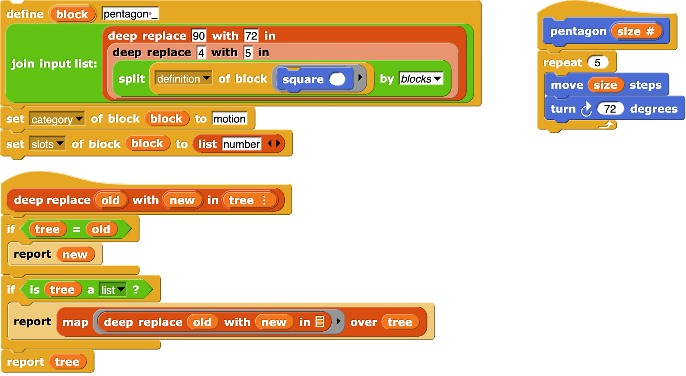

11 Metaprogramming
The scripts and custom blocks that make up a program can be examined or created by the program itself.
Reading a block

The definition of block takes a custom block (in a ring, since it’s the block itself that’s the input, not the result of calling the block) as input and reports the block’s definition, i.e., its inputs and body, in the form of a ring with named inputs corresponding to the block’s input names, so that those input names are bound in the body.
The split by blocks block takes any expression or script as input (ringed) and reports a list representing a syntax tree for the script or expression, in which the first item is a block with no inputs and the remaining items are the input values, which may themselves be syntax trees.

Using split by blocks to select custom blocks whose definitions contain another block gives us this debugging aid:

Note in passing the my blocks block , which reports a list of all visible blocks, primitive and custom. (There’s also a my categories block , which reports a list of the names of the palette categories.) Also note custom? of block , which reports True if its input is a custom block.
Writing a block
The inverse function to split by blocks is provided by the join block , which when given a syntax tree as input reports the corresponding expression or script.

Here we are taking the definition of square, modifying the repetition count (to 6), modifying the turning angle (to 60), using join to turn the result back into a ringed definition, and using the define block to create a new hexagon block.
The define block has three “input” slots. The quotation marks are there because the first slot is an upvar, i.e., a way for define to provide information to its caller, rather than the other way around. In this case, the value of block is the new block itself (the hexagon block, in this example). The second slot is where you give the label for the new block. In this example, the label is “hexagon _” in which the underscore represents an input slot. So, here are a few examples of block label s:
set pen _ to _
for _ = _ to _ _
ask _ and wait
_ of _
Note that the underscores are separated from the block text by spaces. Note in the case of the for block’s label that the upvar (the i) and the C-slot both count as inputs. Note also that the label is not meant to be a unique symbol that represents only this block. For example, and both have the label
_ of _. The label does not give the input slots names (that’s done in the body, coming next) or types (that’s done in the set _ of block _ to _ block , coming in two paragraphs).
The third slot is for the definition of the new block. This is a (ringed) script whose input names (formal parameters) will become the formal parameters of the new block. And the script is its script.
So far we know the block’s label, parameters, and script. There are other things to specify about the block, and one purpose of the block upvar is to allow that. In the example on the previous page, there are four set _ of block _ to _ blocks, reproduced below for your convenience:

The category of the block can be set to any primitive or custom category. The default is other. The type is command, reporter, or predicate. Command is the default, so this setting is redundant, but we want to show all the choices in the set block. The scope is either global or sprite, with global as the default. The last input to set slots is a list of length less than or equal to the number of underscores in the label. Each item of the list is a type name, like the ones in the is (5) a (number)? block. If there is only one input, you can use just the name instead of putting it in a list. An empty or missing list item means type Any.
It’s very important that these set blocks appear in the same script as the define that creates the block, because the block upvar is local to that script. You can’t later say, for example,

because the copy of the hexagon block in this instruction counts as “using” it.

The of block reporter is useful to copy attributes from one block to another, as we copied the definition of square, modified it, and used it to define hexagon. Some of the values this block reports are a little unfriendly:
“1”? Yes, this block reports numbers instead of names for category, type, and scope. The reason is that maybe someday we’ll have translations to other languages for custom category names, as we already do for the built-in categories, types, and scopes; if you translate a program using this block to another language, the numeric outputs won’t change, simplifying comparisons in your code. The set block accepts these numbers as an alternative to the names.
There are a few more attributes of a block, less commonly used.


The list input is just like the one for set slots except for default values instead of types. Now for a block with a menu input:



Prefer a read-only menu?


We passed too quickly over how the script turned the square block into a hexagon block:

Those replace item blocks aren’t very elegant. I had to look at foo by hand to figure out where the numbers I wanted to change are. This situation can be improved with a little programming:

Exercise for the reader: Implement this:

Returning to the define block, there’s another reason for the block upvar: It’s helpful in defining a recursive procedure using define . For a procedure to call itself, it needs a name for itself. But in the definition input to the define block, define itself hasn’t been called yet, so the new block isn’t in the palette yet. So you do this:

Yes, you put block in the define, but it gets changed into this script in the resulting definition.


You could use this script directly in a simple case like this, but in a complicated case with a recursive call inside a ring inside the one giving the block definition, this script always means the innermost ring. But the upvar means the outer ring; note how the definition of blockify automatically creates a script variable to hold the outer environment.
It’s analogous to using explicit formal parameters when you nest calls to higher order functions.
Note: Ordinarily, when you call a function that reports a (ringed) procedure, that procedure was created in some specific environment, and has access to that environment’s variables. This is how instance variables (fields) work in object oriented programming (Chapter VIII). But the procedures made by join of a syntax tree have no associated environment, not even the one containing global variables. That doesn’t matter if the procedure will use only its own input variables, but for access to other variables, use
Macros

Users of languages in the C family have learned to think of macros as entirely about text strings, with no relation to the syntax of the language. So you can do things like
#define foo baz)
with the result that you can only use the foo macro after an open parenthesis.
In the Lisp family of languages we have a different tradition, in which macros are syntactically just like procedure calls, except that the “procedure” is a macro, with different evaluation rules from ordinary procedures. Two things make a macro different: its input expressions are not evaluated, so a macro can establish its own syntax (but still delimited by parentheses, in Lisp, or still one block, in Snap! ); and the result of a macro call is a new expression that is evaluated as if it appeared in the caller of the macro, with access to the caller’s variables and, implicitly, its continuation.
Snap! has long had the first part of this, the ability to make inputs unevaluated. In version 8.0 we add the ability to run code in the context of another procedure, just as we can run code in the context of another sprite, using the same mechanism: the of block . In the example on the previous page, the if _ report _ caller _ block runs a report block, but not in its own context; it causes the fizzbuzz block to report “fizz” or “buzz” as appropriate. (Yes, we know that the rules implemented here are simplified compared to the real game.) It doesn’t just report out of the entire toplevel script; you can see that map is able to prepend “The answer is” to each reported value.

This macro capability isn’t fully implemented. First, we shouldn’t have to use the calling script as an explicit input to the macro. In a later release, this will be fixed; when defining a block you’ll be able to say that it’s a macro, and it will automatically get its caller’s context as an invisible input. Second, there is a possibility of confusion between the variables of the macro and the variables of its caller. (What if the macro wanted to refer to a variable value in its caller?) The one substantial feature of Scheme that we don’t yet implement is hygienic macros, which make it possible to keep the two namespaces separate.